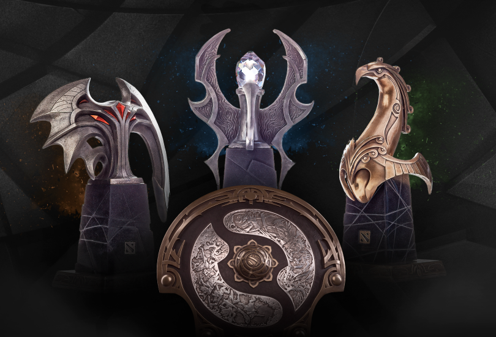
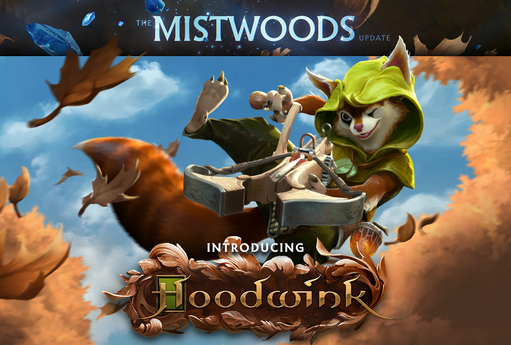
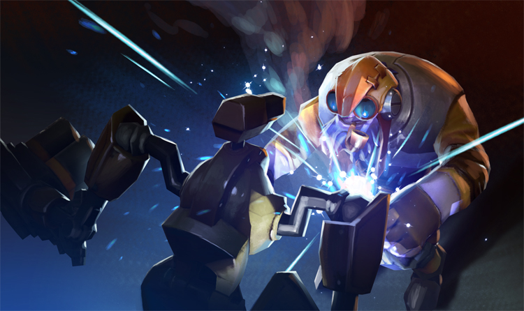

December 31, 2020 - Dota Team
As we start a new year amidst positive news regarding the vaccine for COVID-19, we wanted to share with you our plans for the Dota Pro Circuit season 2021.
This year’s competition is slated to start on January 18th, and will consist of 2 seasons, leading up to The International 10. As previously announced, each season, will consist of a six week League portion leading up to a Major. After two seasons, there will be qualifiers for the remaining slots for The International 10 happening in Stockholm in August. The calendar for the two seasons is as follows:
Season 1: January 18th – February 28th. (March 14th for China with a break in the middle)
Major 1: March 25th – April 4th
Season 2: April 13th – May 23rd
Major 2: June 2nd – June 13th
Given that several teams experienced a lot of roster changes throughout the year and performance has varied among teams from the previous DPC season, we will not be using previous season’s DPC points as a way to seed teams into the leagues but rather selecting the top 4 teams in best form from each region to be directly qualified to the Upper division, while a series of qualifiers, closed and open, will determine the remaining 12 teams in both divisions.
At the end of the league, the top teams from each region’s upper division will qualify to the Major. For the first major, the distribution of the 18 slots will be as follows:
EU: Top 4
China: Top 4
SEA: Top 3
CIS: Top 3
NA: Top 2
SA: Top 2
The bottom two teams of the Upper Division in each Region will be relegated to the Lower Division, while the top two teams of the Lower Division will be promoted. The bottom two teams of the lower division will be eliminated from the league and open qualifiers will decide which are the two teams that will occupy those slots on the next season.
The Mistwoods Update
December 17, 2020 - Dota Team
Deep in the outlands, beyond the deserts of Nanarak and north of the coal fires of Krimwohl, a treacherous expanse of woodland awaits — where a stash of precious Aghanim’s shards has been discovered and a cunning new hero runs wild.
Head over to The Mistwoods Update page to learn all about this new warrior in the battle for the Ancients and the trove of all-new powers that Aghanim’s magnanimity has bestowed upon us all.
Upcoming Updates
November 24, 2020 - Dota Team
With Thanksgiving coming around the corner, we wanted to take the opportunity to thank you all for your continued support during the year and wish you stay safe and healthy during this time. Additionally, we wanted to give you another quick update about some of the upcoming things we’re working on.
As we mentioned in the previous Dota Plus update, the new season will be starting December 1st and it will feature a seasonal quest reset, a new seasonal treasure and more. We have also started rolling in backend changes to gather data for the upcoming Overwatch features. When fully implemented, this tool will allow users to review suspicious matches and help identify bad actors, in addition to our existing systems.
On the gameplay front, our original plan for the new hero was November 30th, however she needs a bit more time to cozy up for the winter. We will be releasing her, along with the 7.28 gameplay update, in mid December.
Finally we are excited to announce that the 2021 Dota Pro Circuit will start on January 18th. 16 teams within two divisions will compete in each of the six Regional Leagues. The best from each region will also qualify to the first Major of the season. More information on schedule and details will be available soon.